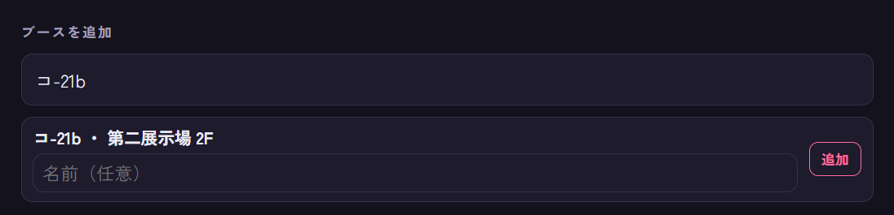
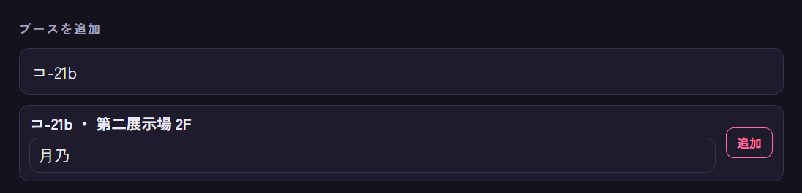
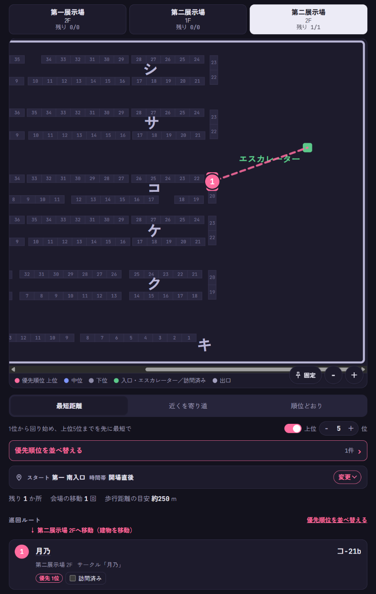

‹ マップに戻る
1はじめに
準備は次の3つだけです。前日までにPCで済ませて、スマホに送っておくのがおすすめです。
- 回りたいブースを追加する
- 優先順位を並べ替える
- ルートの種類とスタート地点を選ぶ
あとは当日、上から順に回って「訪問済み」にチェックを入れていくだけです。
2ブースを登録する（追加・外す）
2-1. まずブース番号を調べる
登録にはブース番号（スペース番号）を使います。番号は次のような場所で確認できます。
- サークルのX（旧Twitter）の告知ポストや、名前欄（例：「M3春 コ-21b」）
- お品書きや新譜の告知画像（「第一展示場 2F V-28ab」のように書かれていることが多いです）
- CDの特設サイトの「BOOTH」「SPACE」などの欄
- M3公式のWebカタログ（catalog.m3net.jp）
2-2. ブース番号の読み方
ブース番号は「記号-数字」の後ろに a / b / ab（一部は x / y / z）が付いた形です。
- 記号で会場が分かります。アルファベット（A〜V）は第一展示場、ひらがな（あ〜か）は第二展示場 1F、カタカナ（キ〜シ）は第二展示場 2Fです。
- 数字は机の番号です。
- a / b は机の左右どちら側か、ab は机1つ分（2スペース）を使うサークルです。
- x / y / z：第二展示場 2F のク-03〜ク-36とケ-03〜ケ-07は、1つの机を3つに分けていて、a / b の代わりに x / y / z が付きます（例：ク-10x、ケ-05z）。
2-3. 登録の手順
登録例：月乃さん（コ-21b）
- ページの下の方にあるブースを追加の入力欄をタップします。
- ブース番号を入力します。例：コ-21b、T-15ab、あ-04a、ク-10x
- 全角（Ｔ－１５ａｂ）や小文字（t15ab）でも大丈夫です。
- ハイフンは省略できます（コ21b）。数字が1桁なら「T-5」のように入れても「T-05」として扱います。
- 正しい番号なら、入力欄の下に「コ-21b ・ 第二展示場 2F」のような候補が出ます。会場名も一緒に出るので、番号が合っているかをここで確かめられます。

「コ-21b」と入力したところ。すぐ下に候補が出ます。
- 候補の中の名前（任意）に、サークル名や作家さんの名前を入れます。空のままでも登録でき、その場合はブース番号が名前として表示されます。

名前欄に「月乃」と入れたところ。
- 追加を押すと登録されます。
登録したブースは、すぐに地図とルートに反映されます。優先順位はその建物のリストの一番下に入るので、必要に応じて「優先順位を並べ替える」で上へ動かしてください。

追加したあと。地図の「コ-21」の机に巡回順の番号が付き、下の巡回ルートにも「月乃 コ-21b」が出ます。
※ 画面は、月乃さん（コ-21b）を登録する例です（ダーク表示）。
サークル名で探す：18ブース入り版（/my/）では、ブース番号のほかにサークル名・よみ・Xのアカウント名でも検索できます。候補にブース番号と会場が出るので、追加を押すだけで登録できます（名前の入力は不要です）。
登録のコツ：同じ机（例：コ-21a と コ-21b、ク-10x と ク-10y）のサークルも、それぞれ別に登録できます。机1つ分のサークル（ab）は「ab」まで入れておくと、番号が見分けやすくなります。
2-4. うまく登録できないとき
- 候補が出ない：その番号の机が会場マップにありません。記号（ひらがな／カタカナ）の打ち間違いがないか、番号が合っているかを確認してください。ク-03〜36・ケ-03〜07 は x / y / z、それ以外は a / b / ab なので、記号の組み合わせが違っていても候補は出ません。
- 「藍-01」などの番号が登録できない：「藍」はカタログ参加枠で、会場にはスペースがありません。そのため地図には登録できません。
- 「すでにリストにあります」と出る：同じブース番号がもう登録されています。
- 名前を間違えた：名前だけを直す機能はないので、一度「外す」で外してから、正しい名前で登録し直してください。
2-5. 登録したブースを外す・戻す
- 優先順位を並べ替えるを押して、優先順位の画面を開きます。
- 外したいブースの右にある外すを押します。地図とルートからすぐに消えます。
あとから登録したブースは、外すと削除されます（もう一度使うときは登録し直してください）。はじめから入っているブースを外した場合は、ページ下の「リストから外したブース」に残り、戻すで元に戻せます。
3優先順位を決める
- 優先順位を並べ替えるボタン（または巡回ルートの見出し横のリンク）を押します。
- 開いた画面で、各ブースの左にある ⠿ をドラッグして上下に動かします。上ほど優先です。
- 並べ替えると、画面下に「巡回ルートを更新しました」と表示され、ルートがすぐ変わります。
並べ方は2種類あります。
- フロアごと（初期設定）：第一展示場・第二展示場1F・第二展示場2Fを別々に並べます。1つのフロアを回り終えてから次のフロアへ移るので、行ったり来たりしません。フロアの順番は、スタート地点のフロアから歩く距離が短くなる順に自動で決まり、優先順位の画面もその順に並びます。
- まとめて：全ブースを1つのリストで並べます。フロアや建物の行き来が増えることがあります。
4ルートの種類を選ぶ
地図の下にある3つのタブで切り替えます。
最短距離初期設定優先順位1位のブースから回り始め、そこから歩く距離が短い順に回ります。タブの下の「上位 ○ 位」で、何位までを先に回るかを決められます（初期設定は5位。6位以下は後回し）。スイッチをオフにすると、1位以外は距離だけで決まります。
近くを寄り道上位3件の中から近いブースを先に回ります。どのブースも本来の順位から2つより後ろには下がりません。
順位どおり優先順位の通りに回ります。
5スタート地点と時間帯
ルートのタブの下にあるスタート … 時間帯 … 変更 ⌄を押すと選べます。
- 第一展示場は入口と出口が別です。開場直後は南入口からしか入れません。第二展示場へ移るときは北側の出口から出ます。
- 時間帯を午後にすると、第一展示場の北入口も使うルートになります（スタート地点にも選べるようになります）。
- 第二展示場は、開場前は1Fの西側（地図の左外）に待機列ができ、開場（10:30）後に列ごとに南西の入口から入場します。開場直後のルートはこの入口から始まります。午後は東側の入口を使うルートになります。スタート地点の「第二 1F入口」は、時間帯に合わせてどちらかの入口になります。
- 第二展示場1Fも入口と出口が別で、出口は東側の入口のすぐ北側です。
6地図の見方
- 上のタブで第一展示場 2F / 第二展示場 1F / 第二展示場 2Fを切り替えます。各タブには残りのブース数が出ます。
- 地図は指でスクロールでき、右下の＋−で拡大・縮小します。
- 固定を押すと、地図を画面の上に固定したままルートのリストをスクロールできます（初期設定はオン）。もう一度押すと解除します。
- 丸の中の数字が巡回の順番です。点線が移動の目安です（実際は通路を歩いてください）。
- 同じ机や隣の机に複数のブースがあるときは、先に回るブースの番号を大きく机の上に表示し、あとで回るブースの番号は小さくして横に表示します（細い線で机とつながっています）。
- 次に回るブースには「次 ▸ サークル名（ブース番号）」の吹き出しが付き、丸が脈打つように光ります。
優先順位 上位
中位
下位
訪問済み
入口・エスカレーター
出口
7当日の使い方
- 巡回ルートのリストを上から順に回ります。サークル名を押すと、地図がそのブースの位置に移動します。
- 買い物が終わったら訪問済みにチェックを入れます。そのブースはルートから外れ、残りでルートを計算し直します。地図は自動で次のブースの位置に移動し、画面下に「次は ○○（ブース番号）」と表示されます。
- 混んでいる・あとで回りたいときはパスを押します。そのブースはリストの一番下（「パスしたブース」の下）に回り、地図にもそのまま表示されます。戻したいときはパスを取り消すを押します。
- 午後になったら、時間帯を午後に切り替えると第一展示場の北入口も使えるようになります。
ヒント：右上の太陽／月のボタンで、ライト表示とダーク表示を切り替えられます。会場で画面がまぶしいときはダーク表示がおすすめです。パレットのボタンからは、配色のテーマ（さくら・オーシャン・ミントなど10種類）を選べます。選んだテーマはマニュアルにも反映されます。
8戦利品カメラ（写真を撮ってXに投稿）
手に入れたCDなどの写真をその場で撮って、保存したりXに投稿したりできます。初期設定はオフです。
- ページ下の戦利品カメラのスイッチをオンにします。巡回ルートの各ブースの「訪問済み」の横に、カメラのボタンが付きます。
- 買い物が終わったらカメラのボタンを押します。そのブースが訪問済みになり、カメラが起動します。
- 撮影すると写真が表示され、その下に保存ポストする撮り直すが出ます。
8-1. 保存する
- iPhone：共有メニューが開くので「画像を保存」を選ぶと、写真アプリに保存されます。共有メニューが開かないブラウザでは、写真を長押しして「"写真"に保存」を選んでください。
- Android・PC：「ダウンロード」に保存されます。
8-2. Xに投稿する
- ポストするを押すと、文章の入力欄が開きます。「M3春2027の戦利品！」とサークル名・ブース番号・#M3春2027 が最初から入っているので、自由に書き換えてください。
- Xで共有を押すと共有メニューが開くので、Xを選びます。Xのアプリで、写真が添付された投稿画面が開きます。あとはXのアプリで投稿してください。
- 投稿画面に文章が入っていないときは、Xの投稿画面の入力欄を長押しして「ペースト」を選んでください（「Xで共有」を押したときに、文章をコピーしてあります）。
写真をXに直接渡せないブラウザでは、Xで共有の代わりにXの投稿画面を開くが出ます。先に「保存」で写真を保存してから押し、開いた投稿画面で保存した写真を添付してください。
写真について：写真はこの端末の中だけで扱い、自分で共有したとき以外はどこにも送りません。保存・共有する写真は少し小さく（長い辺が2048ピクセル）作り直すので、撮影場所の情報も入りません。アプリの中には写真を残さないので、残したい写真は「保存」してください。
※ iPhoneでは、SafariのほかChromeでも使えますが、Chromeで共有メニューが開かないときはSafariを使ってください。PCではカメラの代わりにファイルを選ぶ画面が開きます。
9ホーム画面に追加してアプリのように使う
ホーム画面にアイコンを置くと、ブラウザのアドレスバーなしでアプリのように開けます。一度開いておけば、会場で電波が弱いときも前に開いた内容で表示できます。
- iPhone（Safari）：画面下の共有ボタン（四角から矢印が出たアイコン）を押し、「ホーム画面に追加」を選びます。
- iPhone（Chrome）：アドレスバーの共有ボタンを押し、「ホーム画面に追加」を選びます。
- Android（Chrome）：右上の︙メニューから「ホーム画面に追加」（または「アプリをインストール」）を選びます。
iPhoneで使うときの注意：ホーム画面から開いたアプリは、
Safariとは別にデータを保存します。Safariで作ったリストをホーム画面のアプリで使うときは、Safariで「この端末のデータを送る」を開いて共有コードをコピーし、ホーム画面のアプリの「コードで受け取る」に貼り付けてください（
PCとスマホでリストを共有する）。
※ ブランク版と18ブース入り版は、それぞれ別のアイコンとして追加できます。
10PCとスマホでリストを共有する
- 送る側（例：PC）で、ページ下のこの端末のデータを送るを押します。
- 受け取る側（例：スマホ）のカメラでQRコードを読み取ります。共有URLを自分宛てに送って開いたり、コードで受け取るに共有コードを貼り付けたりしても大丈夫です。
- 「置き換えますか？」と出たら、内容を確かめて置き換えるを押します。
ブース・優先順位・訪問済み・ルートの設定がそのまま写ります。自動では同期しないので、PCで直したあとは、もう一度送ってください。
11データの保存について
データは使っている端末のブラウザの中だけに保存され、サーバーには送られません。ほかの人とデータが混ざることもありません。ブラウザの履歴やサイトデータを消すと、保存した内容も消えるので注意してください。
12困ったとき
- 並べ替えても巡回ルートが変わらない
- ルートが「最短距離」で、「上位 ○ 位」のスイッチがオフになっていないか確認してください。このときは1位以外の順位はルートに使われません。
- 「第一 北入口」が選べない
- 開場直後は南入口からしか入れないためです。時間帯を「午後」にすると選べます。
- 表示が新しくならない
- ページを再読み込みしてください。ホーム画面のアプリは、一度閉じて開き直すと新しくなります。
- カメラのボタンが出ない
- ページ下の「戦利品カメラ」のスイッチがオンになっているか確認してください。
- カメラが起動しない
- ブラウザのカメラの使用が許可されているか確認してください。iPhoneのChromeでうまくいかないときは、Safariで開いてください。
- Xの投稿画面に文章が入っていない
- Xのアプリが写真と一緒に渡した文章を受け取らないことがあります。文章はコピーしてあるので、投稿画面の入力欄に貼り付けてください。
- ブース番号を入れても候補が出ない
- その番号の机が会場マップにない可能性があります。公式カタログで番号を確認してください。
‹ マップに戻る